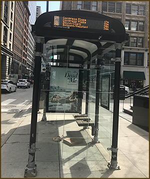
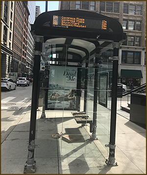

Riding the CTA bus is the least stressful for me. The drivers are polite and wonderful. The passengers are generally tired and simply trying to get home safely. However, sometimes there are interesting moments, like looking down on this elderly gentleman’s foot. Who would expect to see an elderly person wearing an ankle monitor.